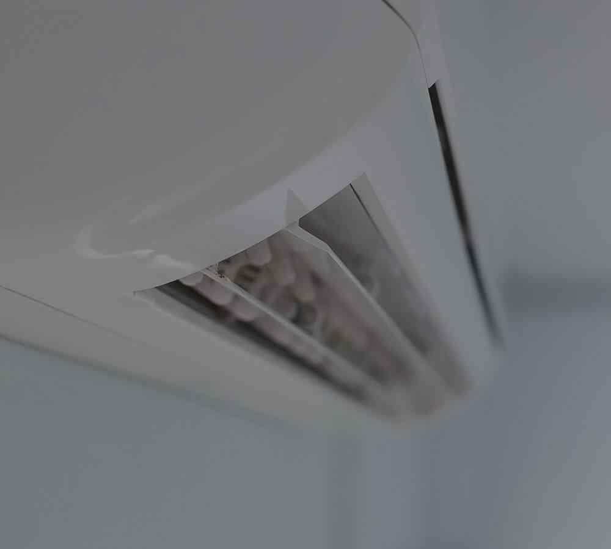

Air conditioning and heating maintenance
Regular maintenance protects the performance, lifespan and energy efficiency of your unit.
Prevent rather than repair
Our certified technicians carry out a complete service to keep your system in good shape all year, in a house or a condo.
Regular maintenance helps cut energy costs, prevent breakdowns, extend the life of the unit and improve air quality.

What maintenance includes
Wall-mounted system
- Filter cleaning
- Indoor coil cleaning
- Drainage check
- Component inspection
- Performance check
Central system
- Central system inspection
- Component cleaning
- Airflow check
- Thermostat check
- Outdoor unit inspection
When to schedule maintenance
Maintenance is generally recommended once or twice a year.
- Before summer
- Before winter
- Once or twice a year
- As soon as performance drops
How maintenance works
Appointment
We agree on a time that suits you.
Inspection
Check of indoor and outdoor components.
Cleaning
Filters, coil and drainage for free airflow.
Check
We confirm performance before leaving.
Frequently asked questions
How often should I maintain my system?
Generally once or twice a year, for example before summer and before winter.
Is maintenance also for central systems?
Yes. We maintain wall-mounted and central systems.
What is maintenance for?
It cuts energy costs, prevents breakdowns, extends lifespan and improves air quality.
My unit is losing performance: what should I do?
Schedule maintenance. If the problem persists, a diagnostic will find the cause.
Clean work, a courteous team

RBQ licence 5812-9388-01Certified contractor, Régie du bâtiment du Québec
- Certified technicians
- Installation and maintenance by licensed professionals.
- Manufacturer and labour warranty
- Your installation is protected.
- Reliable, professional service
- A local team, from quote to maintenance.
- Help with the LogisVert rebate
- We guide you through the steps.